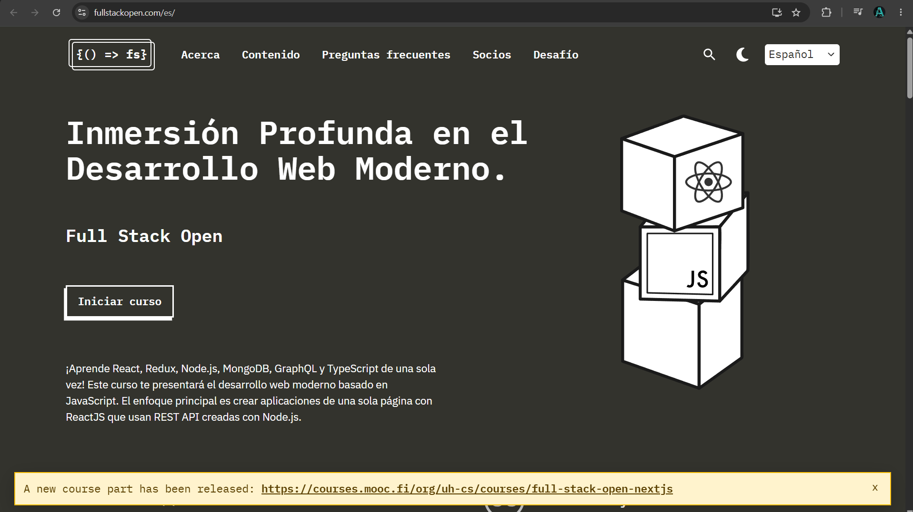
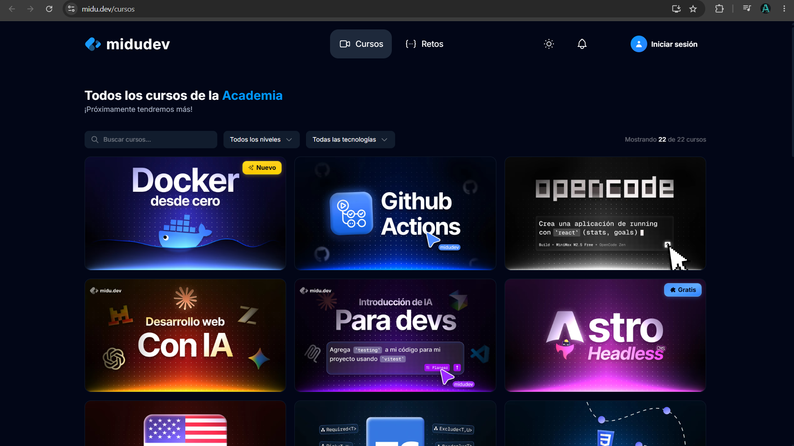
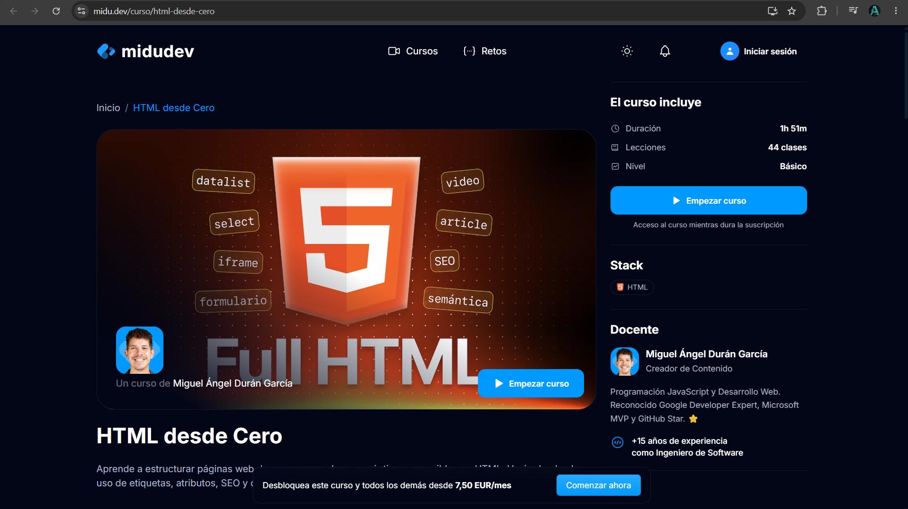
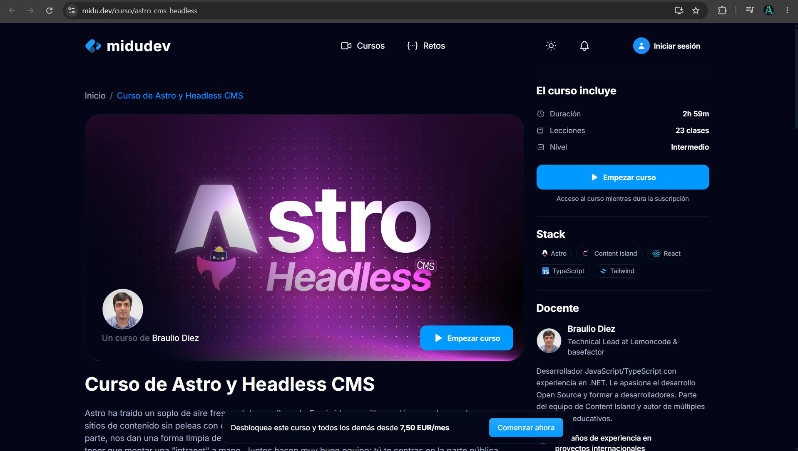
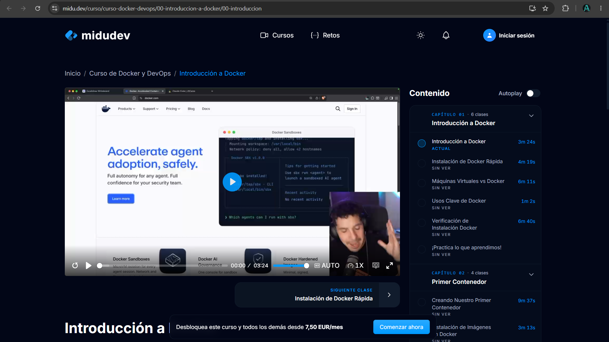
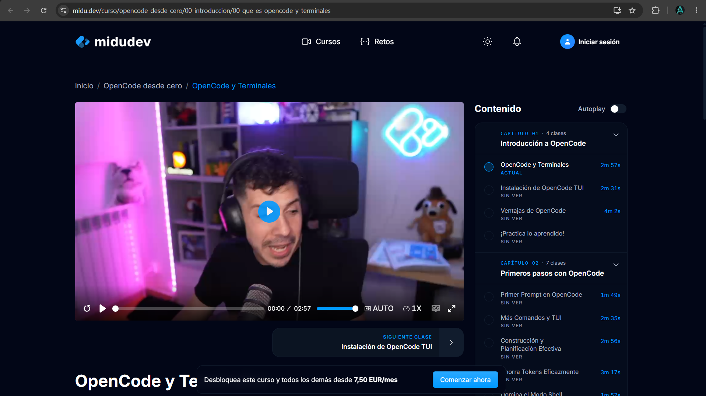
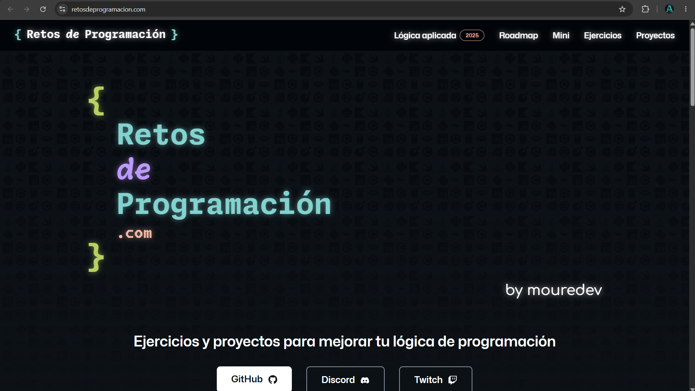

Full Stack Open
Universidad de Helsinki • React, Node.js, GraphQL, TypeScript
Cómo un tablero web y una app para terminales Zebra dejaron atrás las direcciones escritas a mano y hoy muestran dónde está cada repartidor, en tiempo real.
Por Alonso Alberto Cortés Morales
En Scanmex, los repartidores salían de la bodega con las direcciones de entrega impresas. Si una calle estaba mal escrita, si el cliente cambiaba de domicilio o si el tráfico obligaba a cambiar de ruta, nadie en la oficina se enteraba hasta que el repartidor llamaba por teléfono.
La empresa tenía dos problemas de fondo: no sabía dónde estaba su flota y no podía avisar al cliente cuándo llegaría su pedido.
El proyecto conecta dos aplicaciones que comparten la misma información:
Ambas se sincronizan con una base de datos SQL Server y con el Service Layer de SAP Business One, el sistema administrativo de la empresa. Así, cuando se registra una entrega en el celular, el pedido se actualiza también en SAP sin capturarlo dos veces.
El resultado: trazabilidad completa de la flota, menos llamadas para preguntar "¿ya llegaste?" y datos confiables para tomar decisiones.
Cada entrega deja de ser una dirección en papel y se convierte en un punto en el mapa.
MVC separa un sistema en tres partes con tareas distintas. Toca cada tarjeta para ver qué hace en nuestro proyecto.
Escribe una sigla o palabra para filtrar los términos al instante.
No hay términos que coincidan. Prueba con otra palabra o borra la búsqueda.
Dos productos, cada uno con sus herramientas, conectados por la misma base de datos.
Un sistema como este se hace por etapas. Estas herramientas ayudan en cada una; filtra por etapa para ver cuáles usar y para qué.
Recursos seleccionados de desarrollo web full stack, devops y lógica de programación para fortalecer las habilidades técnicas.

Universidad de Helsinki • React, Node.js, GraphQL, TypeScript

Catálogo completo de formación web moderna

Fundamentos semánticos y accesibilidad web

Sitios estáticos ultrarrápidos y arquitectura headless

Contenedores, despliegues y buenas prácticas de infraestructura

Línea de comandos, entorno Unix y flujo de trabajo para desarrolladores

MoureDev • Ejercicios semanales para ejercitar lógica y algoritmos